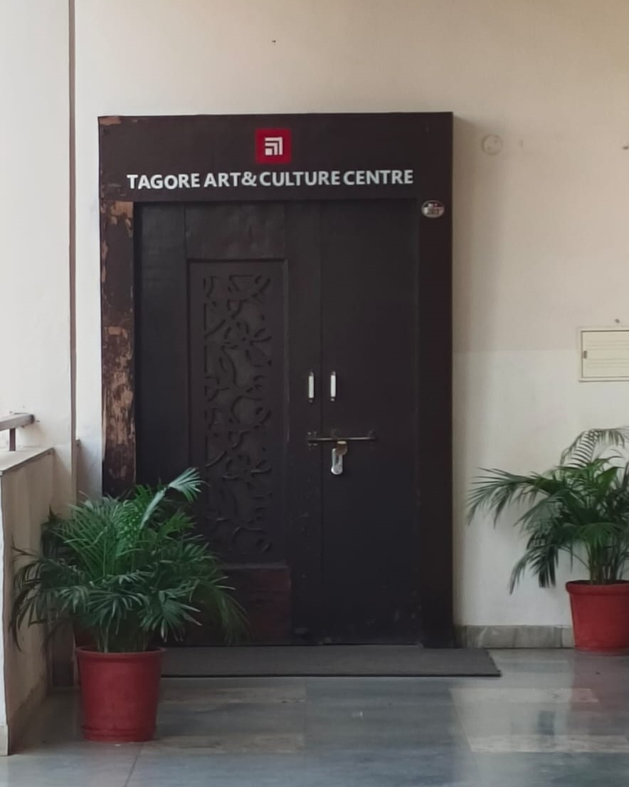
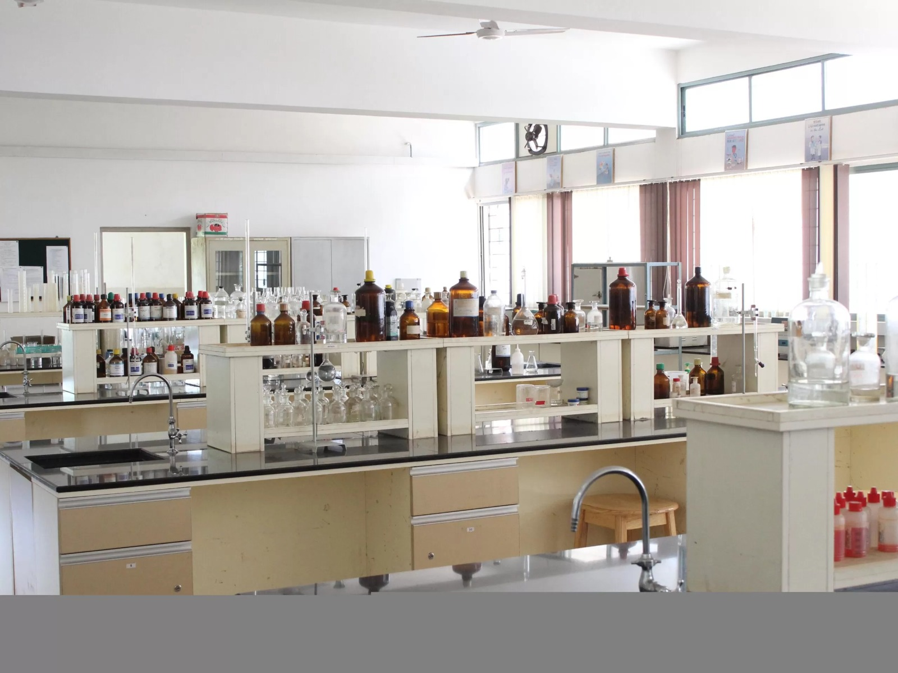
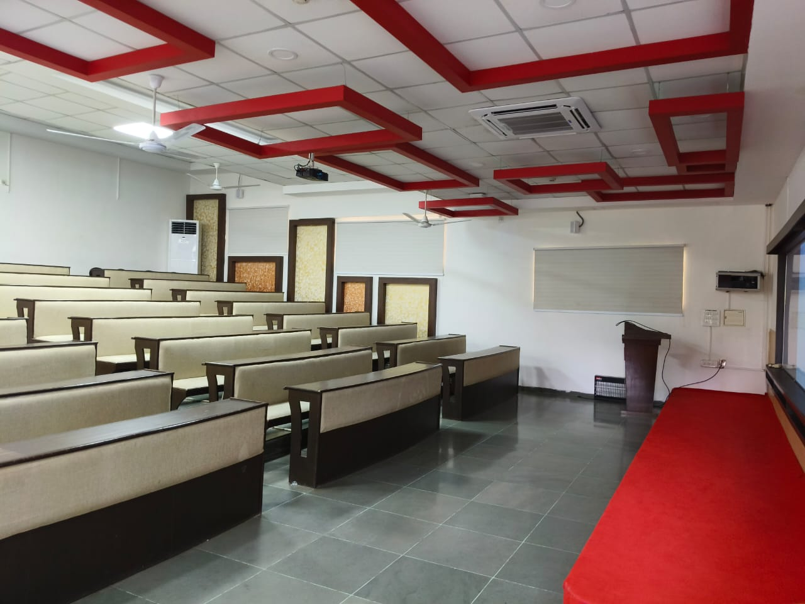
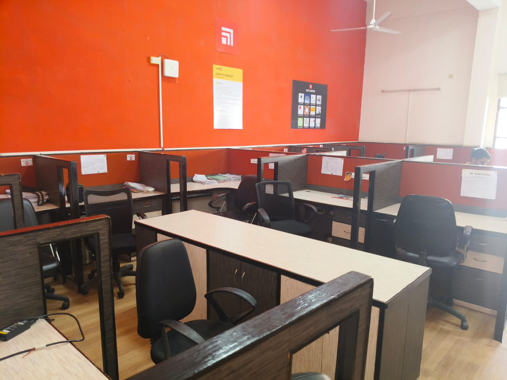
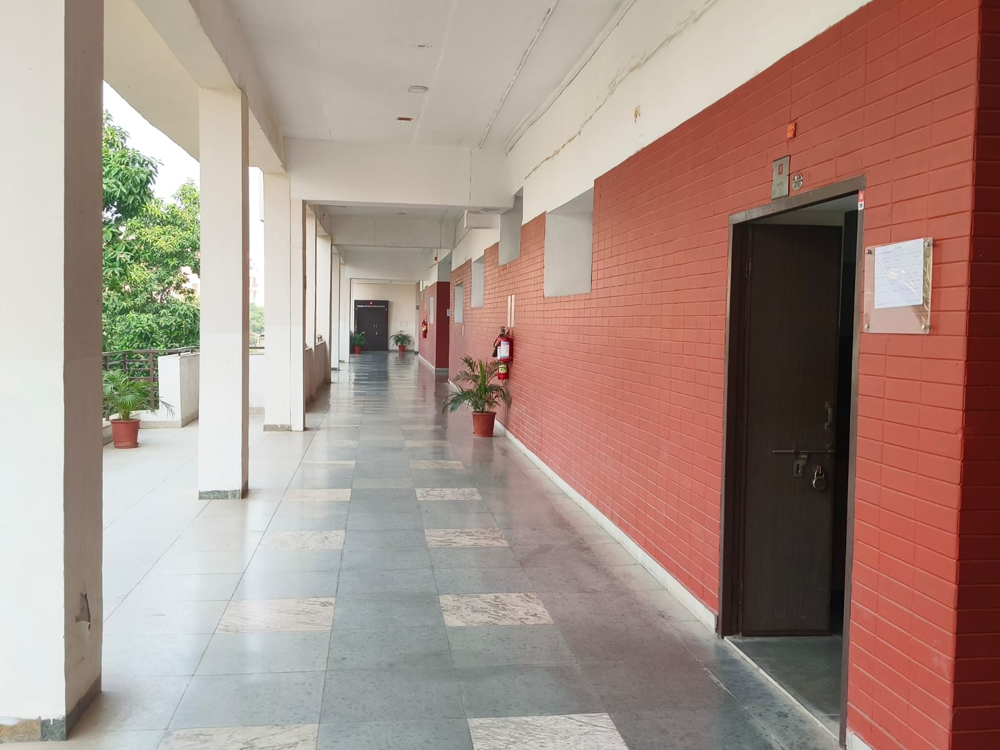
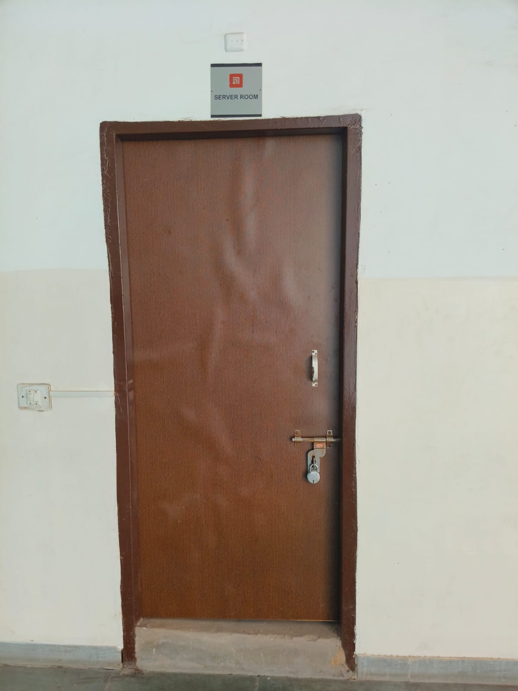

TAGORE ART & CULTURE CENTRE
The Tagore Art and Culture Centre in the Ramanujan Block at Chitkara University is a vibrant space dedicated to promoting arts and culture on campus. The center hosts a variety of artistic events, workshops, and exhibitions, providing students with opportunities to explore and showcase their creative talents. It serves as a hub for cultural exchange, nurturing creativity in fields such as music, dance, theatre, and visual arts. The Tagore Art and Culture Centre plays a key role in enriching the campus life and fostering a deeper appreciation for diverse forms of art and culture.
ENVIRONMENTAL ENGINEERING LAB
The Environmental Engineering Lab in the Ramanujan Block at Chitkara University is a specialized facility focused on practical learning in the field of environmental engineering. The lab is equipped with modern tools and instruments for conducting experiments related to water and wastewater treatment, air pollution control, waste management, and environmental monitoring. It provides students with hands-on experience, helping them understand the real-world applications of environmental engineering principles. The lab plays a crucial role in preparing students to address environmental challenges and develop sustainable solutions.


CLASS ROOMS
At Chitkara University, the classrooms are designed to foster an engaging and interactive learning environment. Equipped with modern technology, including projectors, they support various teaching methods. The seating arrangements encourage collaboration among students, promoting group discussions and teamwork. The overall atmosphere is conducive to both theoretical learning and practical application, enhancing the educational experience.FACULTY ROOMS
The Faculty Room in the Ramanujan Block at Chitkara University is a dedicated space for faculty members to collaborate, plan lessons, and engage in academic discussions. It is equipped with necessary amenities to support the teaching and research activities of the faculty. The room provides a comfortable and professional environment where faculty members can prepare lectures, meet with students, and work on academic projects. It serves as a hub for faculty interactions, fostering communication and a collaborative approach to academic excellence.


CORRIDOR
The corridors of Chitkara University are not only clean and well-maintained but also serve as a source of inspiration for students. Adorning the walls are quotes from successful individuals, promoting motivation and a positive mindset. These quotes create an uplifting atmosphere, encouraging students to strive for excellence as they navigate through their daily routines. The combination of cleanliness and motivational messages makes the corridors a vital part of the university's learning environment.SERVER ROOM
The server room on the second floor of Ramanujan Block at Chitkara University houses the university's IT infrastructure, including servers and networking equipment. It ensures the smooth operation of academic systems and online services. The room is equipped with temperature control, fire suppression, backup power, and strict security measures like CCTV and access controls. This setup ensures continuous performance, data security, and minimal downtime for university operations.